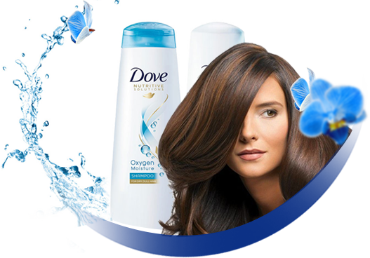

Hair care products
I recently received the new Dove Oxygen Moisture Shampoo & Conditioner to review, courtesy of PINCHme. So naturally, I wanted to share my findings with you!This was my first time hearing about the Dove Oxygen Moisture line of products. Recently, I’ve been purchasing and using quite a few new hair care products, such as Herbal Essences and Clear